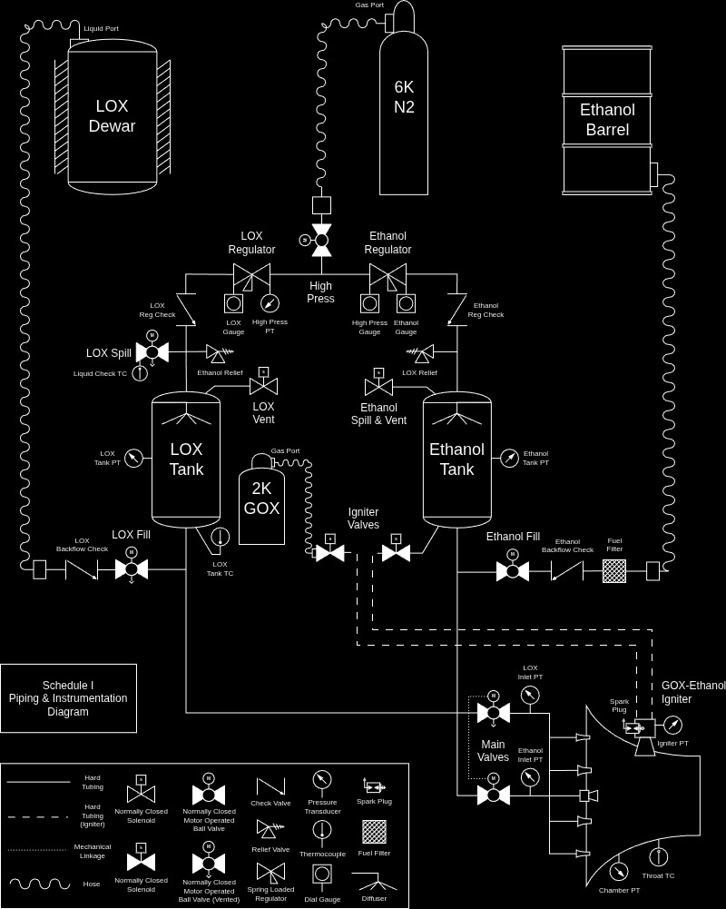
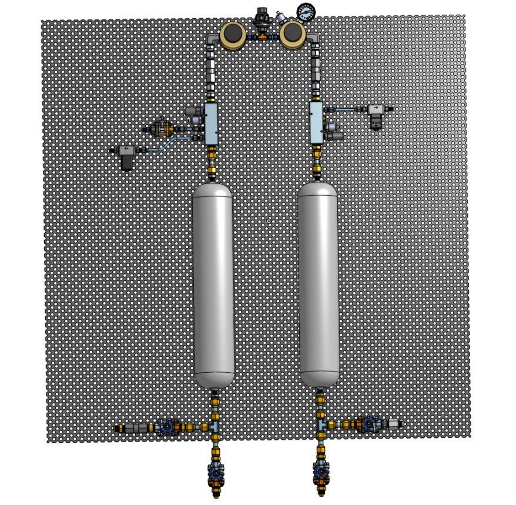

Phase 01
P&ID Development
Feed-system development began with a complete piping and instrumentation diagram defining the architecture of the test stand. The P&ID established the liquid oxygen, ethanol, nitrogen pressurization, loading, venting, purge, ignition, and engine-feed paths before detailed hardware integration began.
The diagram also defined the placement of regulators, main propellant valves, relief devices, check valves, filters, pressure transducers, thermocouples, and other instrumentation. Developing the system at the schematic level allowed operating sequences and safety features to be evaluated before components were positioned in CAD.

Phase 02
Propellant and Component Sizing
Engine mass-flow requirements and target burn duration were used to calculate the required quantity of each propellant. The resulting liquid masses were converted into required tank volumes using the corresponding propellant densities and an additional operational volume margin.
Component selection was based on operating pressure, required flow capacity, pressure drop, temperature, material compatibility, and availability. Regulators were sized in standard cubic feet per minute to verify that the nitrogen pressurization system could maintain the required tank pressure throughout the burn.
Required Propellant Mass
Required Liquid Volume
Tank Volume With Operational Margin
Standard Nitrogen Volumetric Flow
Gas Regulator Flow Coefficient
Final regulator selection was checked using the sizing convention and performance data supplied by the regulator manufacturer, including choked-flow limitations where applicable.
Phase 03
Preliminary Fluids CAD
A preliminary CAD assembly was developed to translate the P&ID into a physical system. The model established the initial tank placement, regulator arrangement, valve locations, tubing routes, mounting panels, and overall packaging of the LOX and ethanol subsystems.
The feed-system architecture and selected hardware have continued to evolve since this model was created. The CAD shown represents an early integration study used to evaluate packaging and accessibility, rather than the final test-stand configuration.

Current Status
Ongoing System Development
The P&ID, major component selection, sizing calculations, and preliminary CAD have been completed. Final component placement, detailed tubing routing, remote valve actuation, adjustable regulator control, and automated propellant loading will be incorporated as the stand progresses toward fully remote operation.